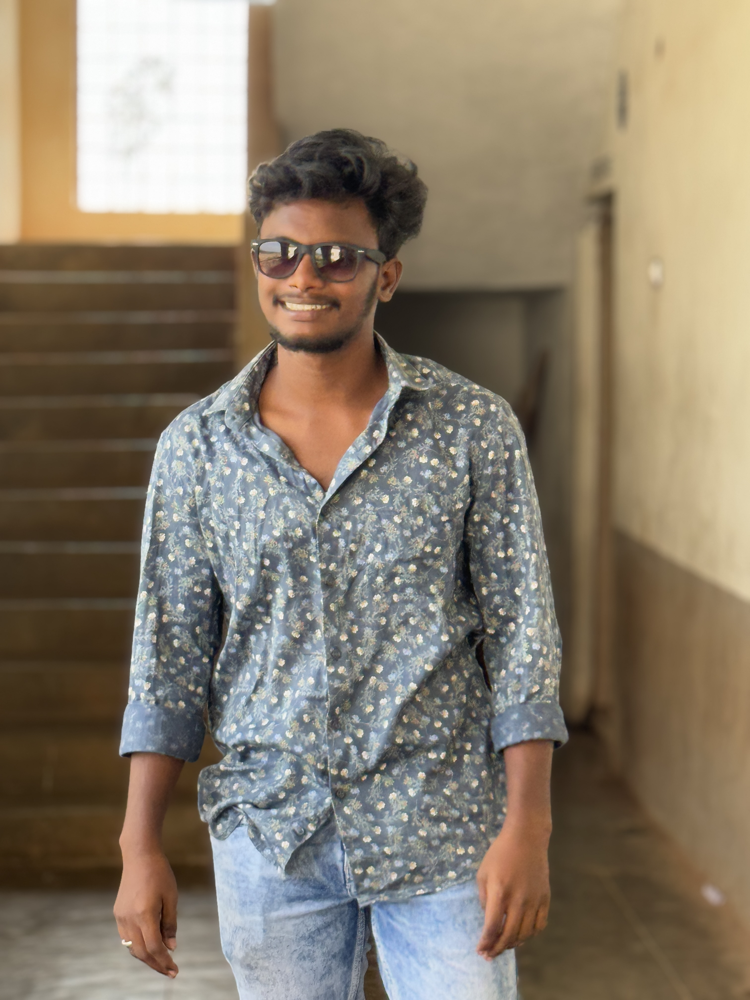

Simple • Clean • Learning Every Day
Introduction | Journey | Tools I Use | My Work | Reach Me
|
Hello! My name is Vinay Dara. I am a passionate learner who loves exploring software development. I enjoy turning ideas into small working applications and improving them step by step. My main focus right now is learning Java Full Stack Development and strengthening my problem-solving skills. |
 |
🎓 Graduated in Electronics and Communication Engineering
💻 Started with basics of C and Java, then moved to Web Development
🚀 Currently practicing Java, HTML, SQL and building mini projects
| Category | Technologies |
|---|---|
| Programming | Java, C |
| Web | HTML, CSS, JavaScript |
| Database | MySQL, SQL |
| Others | Git, GitHub, Basics of Spring |
📱 Phone: 9701499921
📧 Email: vinaydara18@gmail.com
🔗 LinkedIn: Visit Profile
🐙 GitHub: View Projects